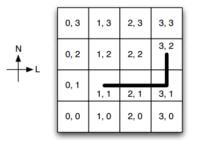
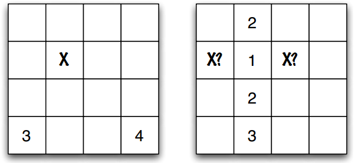

Caça ao Tesouro(){
Maratona
Caça ao Tesouro
Capitão Tornado é um pirata muito cruel que faz qualquer coisa por dinheiro. Há alguns dias, o capitão soube da existência de um tesouro numa ilha deserta, e agora tenta determinar sua posição.
A ilha pode ser vista como um quadriculado N × N de terra cuja posição (0, 0) está a sudoeste, a posição (N - 1, 0) está a sudeste, a posição (0, N - 1) está a noroeste e a posição (N - 1, N - 1) está a nordeste. Em alguma posição desse quadriculado está o tesouro.
Uma curiosidade importante é a perna de pau que o capitão possui. Ela impede que o capitão se locomova em direções que não a horizontal ou a vertical: para ir da posição (1, 1) para a posição (3, 2), por exemplo, o capitão é obrigado a gastar três passos. É claro que o capitão sempre escolhe, dentro de suas limitações, um caminho com o menor número de passos possível. Chamamos esse modo de andar de passos de capitão. Um exemplo de caminho por passos de capitão entre (1, 1) e (3, 2) é ilustrado na figura a seguir.

Como em toda boa caça ao tesouro, o capitão não conhece a posição onde o tesouro se encontra: ele possui um mapa que corresponde à geografia da ilha. Em algumas posições desse mapa, existem pistas escritas. Cada pista consiste em um número D, que indica a menor distância em passos de capitão entre a posição em que a pista se encontra e a do tesouro.

Observe que, dependendo da disposição das pistas, a posição do tesouro pode estar determinada de maneira única ou não. Na figura acima e à esquerda, as duas pistas são suficientes para se saber, com certeza, onde está o tesouro; na figura à direita, as quatro pistas dadas ainda possibilitam que tanto a posição (0, 2) quanto a (2, 2) guardem o tesouro. Nesse último caso, não se pode determinar, com certeza, qual é a localização do tesouro.
Dadas as pistas que o capitão possui, sua tarefa é determinar se as pistas fornecem a localização exata do tesouro e, caso positivo, qual ela é.
Entrada
A primeira linha contém dois inteiros positivos N e K, onde N é a dimensão do quadriculado e K é o número de pistas no mapa que o capitão possui.
Cada uma das próximas K linhas contêm três inteiros X, Y e D, informando que existe uma pista na posição (X, Y) contendo o número D. Essa pista indica que o tesouro encontra-se a D passos de capitão da posição da pista.
É garantido que, com essas pistas, existe ao menos uma localização possível para o tesouro. Além disso, o mapa não contém duas pistas na mesma posição.
Saída
Se as pistas forem suficientes para determinar com certeza a localização do tesouro, seu programa deve imprimir uma única linha com dois inteiros, X e Y , indicando que o tesouro encontra-se na posição (X, Y).
Caso contrário, seu programa deve imprimir uma única linha com dois inteiros iguais a -1, como nos exemplos de saída a seguir.
Restrições
2 ≤ N ≤ 100
1 ≤ K ≤ 100
Exemplos
------------------------------------------------------------------------------
ENTRADA:
4 2
0 0 3
3 0 4
SAIDA:
1 2
------------------------------------------------------------------------------
ENTRADA:
4 4
1 0 3
1 1 2
1 2 1
1 3 2
SAIDA:
-1 -1
------------------------------------------------------------------------------
ENTRADA:
3 3
0 0 2
1 1 2
2 0 4
SAIDA:
0 2
------------------------------------------------------------------------------
Referências:
}